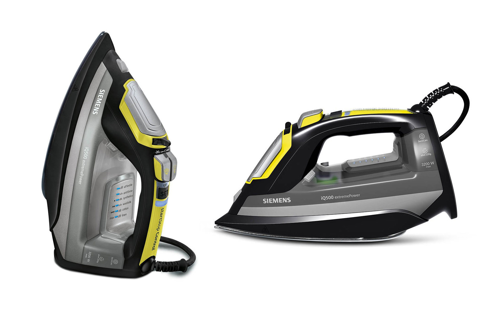
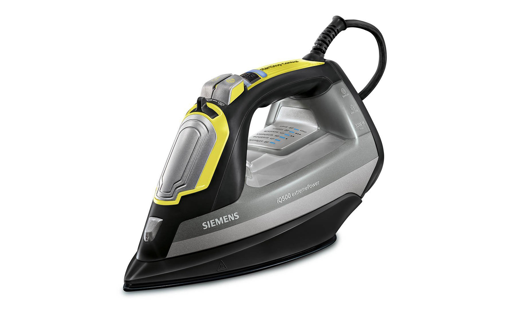
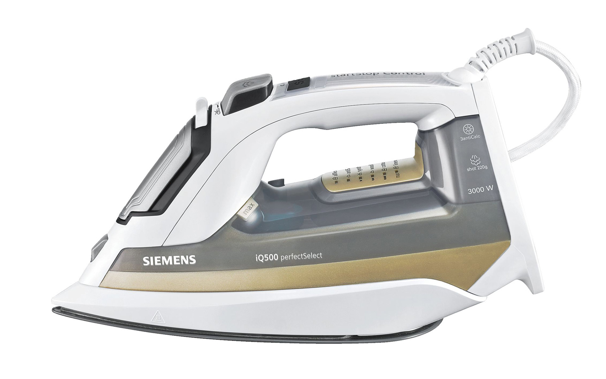
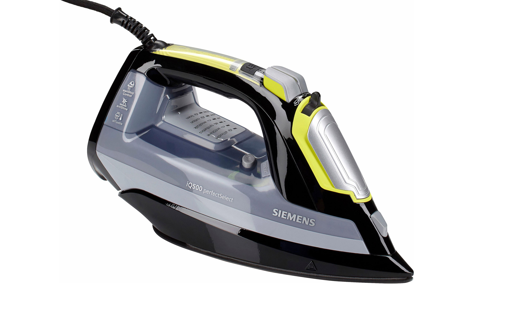

Siemens iQ.500
Steam Iron
Siemens iQ.500
Dampfbügeleisen
The iron Siemens iQ500 combines high-tech functionality with user-friendly design
Distinctive contours ensure an agile appearance and emphasize the high technical level of the product. The
ergonomically designed handle and optimized operating elements ensure comfortable ironing. All ironing
programs can be selected quickly and intuitively and also changed just as quickly. A sensor in the handle
automatically turns off the iron when ironing stops and heats it up as quickly as ironing starts again.
Selić Industriedesign service: CAD design support, CAD freeform modeling and design concept refinement,
processing of design data for the engineering department
Das Bügeleisen Siemens iQ500 verbindet High-Tech-Funktionalität mit benutzerfreundlichem Design
Ausgeprägte Konturen sorgen für ein lebendiges Erscheinungsbild und betonen das hohe technische Niveau des
Produktes. Der ergonomisch gestaltete Griff und optimierte Bedienelemente sorgen für ein komfortables
Bügeln. Alle Bügel-Programme können schnell und intuitiv ausgewählt und ebenso schnell gewechselt werden.
Ein Sensor im Griff schaltet das Bügeleisen automatisch ab, wenn der Bügel-Vorgang unterbrochen wird und
heizt es blitzschnell auf, sobald wieder mit dem Bügeln gestartet wird.
Selić Industriedesign Dienstleistung: CAD-Design Unterstützung, CAD-Freiform-Modellierung und
Detailgestaltung, Aufbereitung von Designdaten für die Konstruktion




Images © BSH GmbH